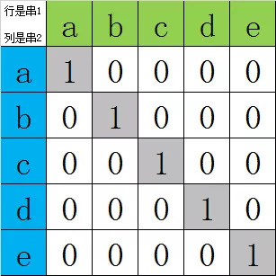
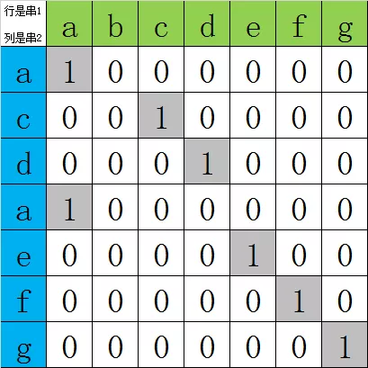
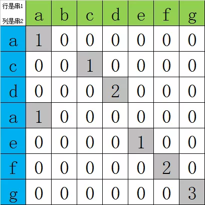
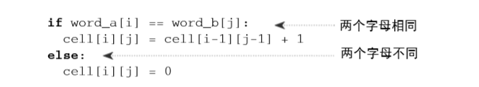

动态规划(dynamic programming)是运筹学的一个分支，是求解决策过程(decision process)最优化的数学方法。20世纪50年代初美国数学家R.E.Bellman等人在研究多阶段决策过程(multistep decision process)的优化问题时，提出了著名的最优化原理(principle of optimality)，把多阶段过程转化为一系列单阶段问题，利用各阶段之间的关系，逐个求解，创立了解决这类过程优化问题的新方法——动态规划。
每次决策依赖于当前状态，又随即引起状态的转移，一个决策序列就是在变化的状态中产生出来的，所以，这种多阶段最优化决策解决问题的过程就称为动态规划。
动态规划的实质是分治思想和解决冗余，因此，动态规划是一种将问题实例分解为更小的、相似的子问题，并存储子问题的解而避免计算重复的子问题，以解决最优化问题的算法策略。
由此可知，动态规划法与分治法和贪心法类似，它们都是将问题实例归纳为更小的、相似的子问题，并通过求解子问题产生一个全局最优解。其中贪心法的当前选择可能要依赖已经作出的所有选择，但不依赖于有待于做出的选择和子问题。因此贪心法自顶向下，一步一步地作出贪心选择；而分治法中的各个子问题是独立的(即不包含公共的子子问题)，因此一旦递归地求出各子问题的解后，便可自下而上地将子问题的解合并成问题的解。但不足的是，如果当前选择可能要依赖子问题的解时，则难以通过局部的贪心策略达到全局最优解；如果各子问题是不独立的，则分治法要做许多不必要的工作，重复地解公共的子问题。
解决上述问题的办法是利用动态规划。该方法主要应用于最优化问题，这类问题会有多种可能的解，每个解都有一个值，而动态规划找出其中最优(最大或最小)值的解。若存在若干个取最优值的解的话，它只取其中的一个。在求解过程中，该方法也是通过求解局部子问题的解达到全局最优解，但与分治法和贪心法不同的是，动态规划允许这些子问题不独立，(亦即各子问题可包含公共的子子问题)也允许其通过自身子问题的解作出选择，该方法对每一个子问题只解一次，并将结果保存起来，避免每次碰到时都要重复计算。
因此，动态规划法所针对的问题有一个显著的特征，即它所对应的子问题树中的子问题呈现大量的重复。动态规划法的关键就在于，对于重复出现的子问题，只在第一次遇到时加以求解，并把答案保存起来，让以后再遇到时直接引用，不必重新求解。
基本思想：与分治法类似，也是将待求解的问题分解为若干个子问题，按顺序求解子问题，前一子问题的解，为后一子问题的求解提供了有用的信息。在求解任一子问题时，列出各种可能的局部解，通过决策保留那些有可能达到最优的局部解，丢弃其他局部解，依次解决各子问题，最后一个子问题就是初始问题的解。
与分治法最大的差别：适合于用动态规划法求解的问题，经分解后得到的子问题往往不是互相独立的（即下一个子阶段的求解是建立在上一个子阶段的解的基础上，进行进一步的求解）。
（1）最优化原理：如果问题的最优解所包含的子问题的解也是最优的，就称该问题具有最优子结构，即满足最优化原理。
（2）无后效性：即某阶段状态一旦确定，就不受这个状态以后决策的影响，也就是说，某状态以后的过程不会影响以前的状态，只与当前状态有关。
（3）有重叠子问题：即子问题之间是不独立的，一个子问题在下一阶段决策中可能被多次使用到。（该性质并不是动态规划适用的必要条件，但是如果没有这条性质，动态规划算法同其他算法相比就不具备优势）
动态规划所处理的问题是一个多阶段决策问题，一般由初始状态开始，通过对中间阶段决策的选择，达到结束状态。这些决策形成了一个决策序列，同时确定了完成整个过程的一条活动路线(通常是求最优的活动路线)。动态规划的设计都有着一定的模式，一般要经历以下几个步骤：
初始状态→│决策１│→│决策２│→…→│决策ｎ│→结束状态
(1)划分阶段：按照问题的时间特征，把问题分为若干个阶段，在划分阶段时，注意划分后的阶段一定要是有序的或者是可排序的，否则问题就无法求解。
(2)确定状态和状态变量：将问题发展到各个阶段时所处于的各种客观情况用不同的状态表示出来，当然，状态的选择要满足无后效性。
(3)确定决策并写出状态转移方程：因为决策和状态转移有着天然的联系，状态转移就是根据上一阶段的状态和决策来导出本阶段的状态。所以如果确定了决策，状态转移方程也就可写出。但事实上常常是反过来做，根据相邻两个阶段的状态之间的关系来确定决策方法和状态转移方程。
(4)寻找边界条件：给出的状态转移方程是一个递推式，需要一个递推的终止条件或边界条件。
一般，只要解决问题的阶段、状态和状态转移决策确定了，就可以写出状态转移方程。实际应用中可以按以下几个简化的步骤进行设计：
① 分析最优解的性质，并刻画其结构特征。
② 递归的定义最优解。
③ 以自底向上或自顶向下的记忆化方式（备忘录法）计算出最优值。
④ 根据计算最优值时得到的信息，构造问题的最优解。
动态规划的主要难点在于上面4个步骤的确定，一旦设计完成，实现部分就会非常简单。使用动态规划求解问题，最重要的就是确定动态规划三要素：
（1）问题的阶段
（2）每个阶段的状态
（3）从前一个阶段转化到后一个阶段之间的递推关系。
递推关系必须是从次小的问题开始到较大的问题之间的转化，从这个角度来说，动态规划往往可以用递归程序来实现，不过因为递推可以充分利用前面保存的子问题的解来减少重复计算，所以对于大规模问题来说，有递归不可比拟的优势，这也是动态规划算法的核心之处。
确定了动态规划的这三要素，整个求解过程就可以用一个最优决策表来描述，最优决策表是一个二维表，其中行表示决策的阶段，列表示问题状态，表格需要填写的数据一般对应此问题的在某个阶段某个状态下的最优值（如最短路径，最长公共子序列，最大价值等），填表的过程就是根据递推关系，从1行1列开始，以行或者列优先的顺序，依次填写表格，最后根据整个表格的数据通过简单的取舍或者运算求得问题的最优解。
f(n,m)=max{f(n-1,m), f(n-1,m-w[n])+P(n,m)}
2.6 实例：最长公共子串
最长公共子串，即最长公共子字符串。也就是Longest Common Substring，通常也被简称为LCS
最长公共子串，即要求求出最长的子串（要求连续）
主要是要定义一个二维数组，这个数组c用来保存str1中每个字符向前能与str2中的字符匹配的个数。每次会将最大的匹配个数保存到max变量中，并且记录拥有max的字符在原字符串中的位置。
如果两个串相同，那么矩阵的对角线全都是1。
如 str1="abcde"，str2="abcde"

如果两个串部分相同，那么矩阵的对角线对应部分是1。
串1是abcdefg，串2是acdaefg

可动态求得公共子串长度：

由图可以看出如果两个字母不相同，则数组对角线值为0，如果两个字母相同，则值为左上角邻居的值加1。得到递推公式：

#include <string.h>
#include <stdlib.h>
#include <stdio.h>
void lcs(char* charA , char* charB)
{
int i,j;
int lenA = strlen(charA);
int lengthB = strlen(charB);
// 动态二维数组cell[][]
int** cell=(int **)malloc(sizeof(int *) * lenA+1);
if(cell==NULL)
{
printf("cell is null");
exit(1);
}
for(i=0;i<lenA+1;i++)
{
cell[i]=(int*)malloc(sizeof(int)*lengthB+1);
if(cell[i]==NULL)
exit(1);
}
for(i=0;i<lenA+1;i++) // 动态二维数组对角线数据初始化为0
for(j=0;j<lengthB+1;j++)
cell[i][j]=0;
int maxLength = 0;
int end = 0;
for(i = 1; i<lenA;i++){
for ( j= 1; j <lengthB; j++) {
if (charA[i]==charB[j]){ // 如果两个字母相同
cell[i][j]=cell[i-1][j-1]+1;
}
if(maxLength<cell[i][j]){ // 得出最大的公共子串
maxLength=cell[i][j];
end=i;
}
}
}
printf("最长字串:");
for(i=end-maxLength+1;i<maxLength+1;i++)//由于循环是从1开始，所以需要加1
printf("%c",charA[i]);
printf(" 长度%d:\n",maxLength);
}
void main() {
//测试数据
char* a = "fishers";
char* b = "ohisher";
char* c = "vista";
lcs(a,b);
lcs(c,a);
getchar();
}
/*output:
最长字串:isher 长度5:
最长字串:is 长度2:
*/
动态规划实现中的问题
应用动态规划解决问题，在有了基本的思路之后，一般来说，算法实现是比较好考虑的。但有时也会遇到一些问题，而使算法难以实现。动态规划思想设计的算法从整体上来看基本都是按照得出的递推关系式进行递推，这种递推相对于计算机来说，只要设计得当，效率往往是比较高的，这样在时间上溢出的可能性不大，而相反地，动态规划需要很大的空间以存储中间产生的结果，这样可以使包含同一个子问题的所有问题共用一个子问题解，从而体现动态规划的优越性，但这是以牺牲空间为代价的，为了有效地访问已有结果，数据也不易压缩存储，因而空间矛盾是比较突出的。另一方面，动态规划的高时效性往往要通过大的测试数据体现出来（以与搜索作比较），因而，对于大规模的问题如何在基本不影响运行速度的条件下，解决空间溢出的问题，是动态规划解决问题时一个普遍会遇到的问题。
对于这个问题，可以考虑从以下一些方面去尝试：
一个思考方向是尽可能少占用空间。如从结点的数据结构上考虑，仅仅存储必不可少的内容，以及数据存储范围上精打细算(按位存储、压缩存储等)。当然这要因问题而异，进行分析。另外，在实现动态规划时，一个我们经常采用的方法是用一个与结点数一样多的数组来存储每一步的决策，这对于倒推求得一种实现最优解的方法是十分方便的，而且处理速度也有一些提高。但是在内存空间紧张的情况下，我们就应该抓住问题的主要矛盾。省去这个存储决策的数组，而改成在从最优解逐级倒推时，再计算一次，选择某个可能达到这个值的上一阶段的状态，直到推出结果为止。这样做，在程序编写上比上一种做法稍微多花一点时间，运行的时效也可能会有一些(但往往很小)的下降，但却换来了很多的空间。因而这种思想在处理某些问题时，是很有意义的。
但有时，即使采用这样的方法也会发现空间溢出的问题。这时就要分析，这些保留下来的数据是否有必要同时存在于内存之中。因为有很多问题，动态规划递推在处理后面的内容时，前面比较远处的内容实际上是用不着的。对于这类问题，在已经确信不会再被使用的数据上覆盖数据，从而使空间得以重复利用，如果能有效地使用这一手段，对于相当大规模的问题，空间也不至于溢出（为了求出最优方案，保留每一步的决策仍是必要的，这同样需要空间）。
一般地说，这种方法可以通过两种思路来实现：一种是递推结果仅使用Data1和Data2这样两个数组，每次将Data1作为上一阶段，推得Data2数组，然后，将Data2通过复制覆盖到Data1之上，如此反复，即可推得最终结果。这种做法有一个局限性，就是对于递推与前面若干阶段相关的问题，这种做法就比较麻烦；而且，每递推一级，就需要复制很多的内容，与前面多个阶段相关的问题影响更大。另外一种实现方法是，对于一个可能与前N个阶段相关的问题，建立数组Data[0..N]，其中各项为最近N各阶段的保存数据。这样不采用这种内存节约方式时对于阶段k的访问只要对应成对数组Data中下标为k mod (N+1)的单元的访问就可以了。这种处理方法对于程序修改的代码很少，速度几乎不受影响，而且需要保留不同的阶段数也都能很容易实现。
当采用以上方法仍无法解决内存问题时，也可以采用对内存的动态申请来使绝大多数情况能有效出解。而且，使用动态内存还有一点好处，就是在重复使用内存而进行交换时，可以只对指针进行交换，而不复制数据，这在实践中也是十分有效的。
斐波那契数列也可以动态地存储前两项的值来求后一项的值：
#include <iostream>
#include <vector>
using namespace std;
vector<int> vec;
vector<int> ::iterator iter;
int fibdp(int n)
{
vec.push_back(1);
vec.push_back(1);
if(n>2)
for(int i=2; i<=n; ++i)
vec.push_back(vec[i-1]+vec[i-2]);
return vec[n-1];
}
/*
def feibo_dp(n):
f = []
f.append(1)
f.append(2)
if n > 2:
for i in range(2, n):
f.append(f[i-1] + f[i-2])
return f[n-1]
*/
int fibdp2(int n)
{
int i, fn, fn_1, fn_2;
if(n<=1)
return 1;
fn_1 = 1, fn_2 = 1;
for ( i = 2; i<=n; ++i)
{
fn = fn_1 + fn_2;
fn_2 = fn_1;
fn_1 = fn;
}
return fn;
}
int fc(int n)
{
if(n==0 ||n==1)
return 1;
else
return (fc(n-1)+fc(n-2));
}
int main()
{
int n;
//cin>>n;
n=11;
fibdp(n);
for(iter=vec.begin();iter!=vec.end();iter++)
cout<<*iter<<" ";
cout<<endl;
cout<<fibdp2(n)<<endl;
cout<<fc(n)<<endl;
cin.get();
return 0;
}
动态规划与其他算法的比较
动态规划与其说是一种算法，不如说是一种算法设计的策略，他的基本思想体现于许多其它算法之中。下面我们通过比较动态规划和其他的一些算法之间的相互联系，来深入理解动态规划的基本思想。
动态规划与静态规划——某些情况下可以相互转化
动态规划与递推——动态规划是最优化算法
动态规划与搜索——动态规划是高效率、高消费算法
态规划与网络流——动态规划是易设计易实现算法
动态规划与静态规划的关系
动态规划与静态规划(线性和非线性规划等)研究的对象本质上都是在若干约束条件下的函数极值问题。两种规划在很多情况下原则上可以相互转换。
动态规划可以看作求决策u1,u2,...,un
使指标函数V1n(xl,u1,u2,...,un)达到最优(最大或最小)的极值问题，状态转移方程、端点条件以及允许状态集、允许决策集等是约束条件，原则上可以用非线性规划方法求解。
一些静态规划只要适当引入阶段变量、状态、决策等就可以用动态规划方法求解。下面用例子说明：
用动态规划解下列非线性规划:
其中gk(uk)为任意的已知函数。
解：按变量uk的序号k划分阶段，看作n段决策过程；设状态为x1,x2,..xn，取问题中的变量u1,u2,..,un为决策；状态转移方程为：
取gk(uk)为阶段指标，最优值函数的基本方程为(注意到xn+1=0)：
解此动态规划即可得到原静态规划的解。
与静态规划相比，动态规划的优越性在于:
能够得到全局最优解。由于约束条件确定的约束集合往往很复杂，即使指标函数较简单，用非线性规划方法也很难求出全局最优解。而动态规划方法把全过程化为一系列结构相似的子问题，每个子间题的变量个数大大减少，约束集合也简单得多，易于得到全局最优解。特别是对于约束集合、状态转移和指标函数不能用分析形式给出的优化问题，可以对每个子过程用枚举法求解，而约束条件越多，决策的搜索范围越小，求解也越容易。对于这类问题，动态规划通常是求全局最优解的唯一方法。
可以得到一族最优解。与非线性规划只能得到全过程的一个最优解不同，动态规划得到的是全过程及所有后部子过程的各个状态的一族最优解。有些实际问题需要这样的解族，即使不需要，它们在分析最优策略和最优值对于状态的稳定性时也是很有用的。当最优策略由于某些原因不能实现时，这样的解族可以用来寻找次优策略。
能够利用经验提高求解效率。如果实际问题本身就是动态的，由于动态规划方法反映了过程逐段演变的前后联系和动态特征，在计算中可以利用实际知识和经验提高求解效率。比如在策略迭代法中，实际经验能够帮助选择较好的初始策略，提高收敛速度。
动态规划的主要缺点是:
没有统一的标准模型，也没有构造模型的通用方法，甚至还没有判断一个问题能否构造动态规划模型的具体准则（大部分情况只能够凭经验判断是否适用动态规划）。这样就只能对每类问题进行具体分析，构造具体的模型。对于较复杂的问题在选择状态、决策、确定状态转移规律等方面需要丰富的想象力和灵活的技巧性，这就带来了应用上的局限性。
用数值方法求解时存在维数灾(curse of dimensionality)。若一维状态变量有m个取值，那么对于n维问题，状态xk就有mn个值，对于每个状态值都要计算、存储函数fk(xk)，对于n稍大(即使n=3)的实际问题的计算往往是不现实的。目前还没有克服维数灾的有效的一般方法。
动态规划的实质是分治和解决冗余，因此动态规划也是递归思想的应用之一。但是，动态规划和递归法还是有区别的。一般我们在实际应用中遇到的问题主要分为四类：判定性问题、构造性问题、计数问题和最优化问题。动态规划是解决最优化问题的有效途径，而递推法在处理判定性问题和计数问题方面是一把利器。下面分别就两个例子，谈一下递推法和动态规划在这两个方面的联系。
同样是解决最优化问题，有的题目我们采用动态规划，而有的题目我们则需要用搜索。这其中有没有什么规则呢？
我们知道，撇开时空效率的因素不谈，在解决最优化问题的算法中，搜索可以说是“万能”的。所以动态规划可以解决的问题，搜索也一定可以解决。
把一个动态规划算法改写成搜索是非常方便的，状态转移方程、规划方程以及边界条件都可以直接“移植”，所不同的只是求解顺序。动态规划是自底向上的递推求解，而搜索则是自顶向下的递归求解（这里指深度搜索，宽度搜索类似）。
反过来，我们也可以把搜索算法改写成动态规划。状态空间搜索实际上是对隐式图中的点进行枚举，这种枚举是自顶向下的。如果把枚举的顺序反过来，变成自底向上，那么就成了动态规划。(当然这里有个条件，即隐式图中的点是可排序的)
正因为动态规划和搜索有着求解顺序上的不同，这也造成了它们时间效率上的差别。在搜索中，往往会出现下面的情况：
有时，用搜索算法就会出现重复。在深度搜索中，这样的重复会引起整个子搜索树的重复搜索；在宽度搜索中，虽然这样的重复可以立即被排除，但是其时间代价也是不小的。而动态规划就没有这个问题。
一般说来，动态规划算法在时间效率上的优势是搜索无法比拟的。（当然对于某些题目，根本不会出现状态的重复，这样搜索和动态规划的速度就没有差别了。）而从理论上讲，任何拓扑有序（现实中这个条件常常可以满足）的隐式图中的搜索算法都可以改写成动态规划。但事实上，在很多情况下我们仍然不得不采用搜索算法。那么，动态规划算法在实现上还有什么障碍吗？
有时存在两个从初始状态无法达到的状态。在搜索算法中，这样的两个状态就不被考虑了。但是动态规划由于是自底向上求解，所以就无法估计到这一点，因而遍历了全部的状态。
一般说来，动态规划总要遍历所有的状态，而搜索可以排除一些无效状态。更重要的是搜索还可以剪枝，可能剪去大量不必要的状态，因此在空间开销上往往比动态规划要低很多。
如何协调好动态规划的高效率与高消费之间的矛盾呢？有一种折衷的办法就是记忆化算法(备忘录法)。记忆化算法在求解的时候还是按着自顶向下的顺序，但是每求解一个状态，就将它的解保存下来，以后再次遇到这个状态的时候，就不必重新求解了。这种方法综合了搜索和动态规划两方面的优点，因而还是很有实用价值的。